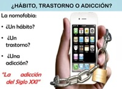
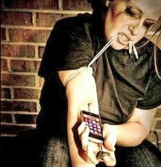

Ultimas noticias

Las causas de la nomofobia son diversas y generalmente están relacionadas con factores psicológicos, sociales y tecnológicos. Una de las principales razones es la dependencia que muchas personas desarrollan hacia sus dispositivos móviles debido a que estos concentran gran parte de las actividades diarias. El teléfono ya no se utiliza únicamente para realizar llamadas, sino también para estudiar, trabajar, entretenerse y mantener relaciones sociales. Otro factor importante es la presión social. En una sociedad altamente conectada, existe la expectativa de responder mensajes de manera inmediata y mantenerse disponible prácticamente en todo momento. Esto puede generar preocupación cuando la comunicación se interrumpe, provocando sentimientos de ansiedad o inseguridad. Asimismo, las redes sociales desempeñan un papel relevante. Las notificaciones constantes, los comentarios, los mensajes y las actualizaciones generan estímulos frecuentes que mantienen la atención de los usuarios. Muchas personas sienten la necesidad de revisar continuamente sus dispositivos para no perder información importante o para mantenerse al tanto de lo que ocurre en su entorno social.
La nomofobia es un problema social relacionado con la dependencia excesiva al teléfono móvil. Se manifiesta cuando una persona siente ansiedad, preocupación o incomodidad al no poder usar su celular, ya sea por falta de batería, señal o acceso a internet. Este fenómeno se ha vuelto más frecuente debido al uso constante de redes sociales, aplicaciones de mensajería y otras herramientas digitales.
La nomofobia afecta principalmente a adolescentes y jóvenes, ya que pueden desarrollar una fuerte necesidad de revisar constantemente sus dispositivos. Esto puede provocar distracción, dificultades para concentrarse, problemas de sueño y una disminución en la comunicación cara a cara. Además, puede afectar las relaciones personales y el rendimiento académico o laboral.
Debido a su impacto en la salud emocional y en la convivencia social, la nomofobia es considerada un problema que requiere promover un uso responsable y equilibrado de la tecnología.

Cuando la nomofobia ya está presente, existen diversas alternativas que pueden ayudar a reducir la dependencia tecnológica y recuperar el equilibrio en la vida cotidiana. Una de las estrategias más efectivas consiste en disminuir gradualmente el tiempo de uso del teléfono móvil, estableciendo límites realistas y alcanzables. Las aplicaciones de bienestar digital permiten monitorear el tiempo de pantalla y controlar el acceso a determinadas plataformas. Estas herramientas ayudan a identificar hábitos poco saludables y facilitan la creación de rutinas más equilibradas. También resulta beneficioso sustituir parte del tiempo dedicado al teléfono por actividades que favorezcan el bienestar físico y emocional, como la lectura, el ejercicio, la práctica de algún deporte, la música o la convivencia con familiares y amigos. En situaciones donde la ansiedad es intensa o afecta significativamente la vida diaria, la intervención profesional puede ser una alternativa adecuada. Los psicólogos y especialistas en salud mental pueden ayudar a identificar las causas de la dependencia, desarrollar estrategias de autocontrol y fortalecer habilidades para manejar la ansiedad relacionada con la desconexión. La combinación de apoyo profesional, hábitos saludables y un uso consciente de la tecnología permite reducir considerablemente los efectos de la nomofobia y mejorar la calidad de vida de las personas afectadas.